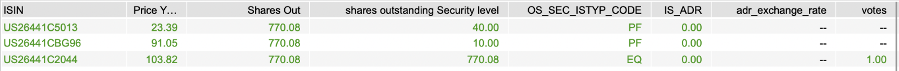
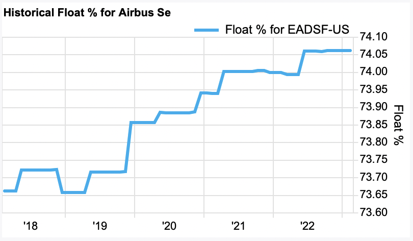
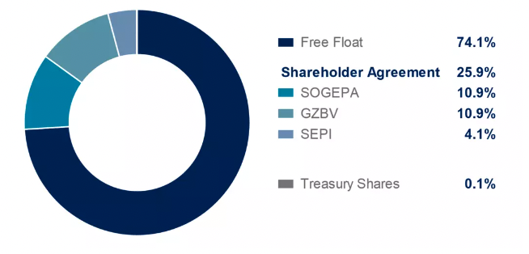
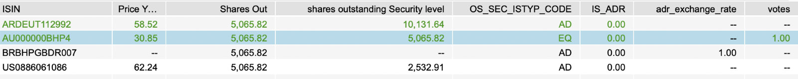
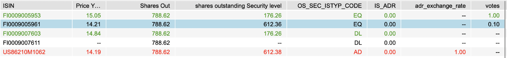

Share Ownership Weighting and Share Class Inclusion in PACTA
Source:vignettes/share_ownership_methodology.Rmd
share_ownership_methodology.RmdPACTA methodology note
Share Ownership Weighting and Share Class Inclusion in
PACTA
Prepared by Nicholas Dodd
1. Background
1.1 Ownership-based attribution methods
In order to attribute an investee companies production or climate alignment results to a financial portfolio a weighting method is required. This methodology note describes the share ownership attribution method for listed equity holdings. This weighting method is based on the individual shares owned by an investor.
Other possible weighting methods for listed equity include equity ownership, which weights based on the market value of the shares held, and voting influence, which weights based on the number of AGM votes associated with the shares held.
1.2 Defining share ownership
Share ownership in the context of PACTA refers to the act of holding a proportion of the publicly listed shares of a given company. Each share, also sometimes referred to as stock, represents an ownership stake in the company that confers the holder with rights to a share of the dividends and/or influence on company decision making.
2. The share ownership weight attribution method
The share ownership weight method is one of several methods that can be used to attribute a companies production or climate performance to a financial portfolio based on the percentage of a companies outstanding public shares that are held.
For holdings in a given entity, share ownership weight is defined as the total number of outstanding shares in all classes of shares within scope held by the investor (the numerator) divided by the total number of outstanding shares for the entity across all listed security issuance for the entity (the denominator). Each listed security issuance is denoted by an ISIN in the dataset.
Where:
are the Share Class and Share Type of each security held by an investor
(see table 2.1)
is the conversion factor required to derive the number of ordinary
shares from the number of depositary note shares
As the number of outstanding shares held by an investor is not provided by users, rather the financial value of the shares held, the number of shares held per security (as denoted by an individual ISIN) must first be obtained by dividing the value of the shares held by the market value of each share.
3. The scope of share classes outstanding
The scope of share classes to be included within the calculation of both the total number of shares outstanding held by an investor (the numerator) and the total number of shares outstanding for the entity as a whole is summarized in table 1.1. The share type bridge and codes identified are proprietary to the use of financial data supplied by FactSet.
Table 1.1 Scope of share classes to be included within the share ownership weight calculation
| Share type (from FactSet bridge) | Included within the numerator for investor holdings? | Included within the denominator for entity shares outstanding? |
|---|---|---|
| Equity (EQ) | Yes | Yes |
| Equity (Pre-IPO) | No | No |
| Preferred (PF) | Yes | Yes |
| Treasury (no bridge code) | No | No |
| Dual listing (DL) | Yes, if identified | No |
| Convertible Preferred (CP) | Yes | Yes |
| ADR/GDR (AD) | Yes, with conversion factor applied | No |
| Convertible bond (CB) | No | No |
4. How share classes should be calculated
4.1 Common and preferred share classes
A number of different classes of shares may be issued as part of a public listing. These include
- Common share capital (EQ) that confers the holder with voting rights at the Annual General Meeting.
- Preferred share capital (PF) that confers the holder with specific rights to dividend payments but are not accompanied by voting rights.
- Convertible share capital (CP) confers a right to convert the preferred shares with a fixed income stream to common shares at a future date.
Common and preferred shares will have different prices and may be also be issued in distinct share classes, such as A, B, and R. These shared classes are targeted at specific types of investors and may have different share prices, administrative costs and associated voting rights.
Case study: Duke Energy – preferred share class
The screenshot below presents the common and preferred shares that Duke Energy has issued on listed stock exchanges. The first two ISINs in the list are preferred shares, and the third ISIN represents common shares.
The market capitalization of the company is the the sum of the market value (price multiplied by outstanding shares) of all the company’s ISINs, and the number of shares issued by the company is the sum of the number of shares outstanding at security level. In this case 770.08+40.00+10.00=820.08 million outstanding shares. The column “Shares Out” reflects the total common outstanding shares.
The column “Shares Out” reflects the total common outstanding shares.

How should these types of shares be treated?
All common equity shares (EQ), preferred shares (PF) and Convertible preferred shares (CP) are to be included in the total of the numerator and denominator.
How should the number of shares be back calculated from the market value?
In order to derive the number of shares the market value of outstanding shares held by an investor should be divided by the market price.
4.2 Treasury shares
Treasury shares are common or preferred shares that have been bought back by an issuer or were never publicly issued and are instead held by the issuer on their balance sheet. These shares are not strictly a class of shares and are not included within outstanding share values provided by FactSet. For the purposes of calculating the share ownership weight treasury shares are therefore excluded.
Case study: Airbus – treasury shares
Airbus issued shares on the Amsterdam stock exchange. Around 25% of the shares are held as treasury by the company and are not available in the market, as can be seen in the chart below. Those shares are excluded from calculations of the denominator as institutions cannot buy those assets on the market.

How should these types of shares be treated?
Treasury shares should be excluded if they can be identified.
4.3 Depository note (ADR/GDR) ISINs
Depositary notes are used in the US and other jurisdictions globally to enable investors to purchase non-US shares issued on exchanges in other jurisdictions. The shares are purchased by a bank or other intermediary who issue depositary notes for the value of the shares, applying currency conversion factors and a corresponding adjustment of the number of shares.
American Depositary Receipts (ADR) and Global Depositary Receipts (GDR) are common examples. The holder of ADR or GDR do not directly hold shares in listed securities issuers, instead they correspond to listed shares purchased by depositary banks that issue the receipts.
Case study: BHP Billingdon – US and Argentinian depositary notes
BHP Billingdon has made on equity share issue against a specific ISIN on the Australian Stock Exchange market. This is their primary issuance of listed equity and so the number of shares outstanding of Billingdon is the one for of the Australian ISIN.
Two issuances of depositary notes have been made against ISINs in the USA and Argentina, allowing investors there to purchase notes equivalent to shares bought on the Australian market. Those depositary note shares therefore represent a proportion of the total outstanding shares of Billingdon on the Australian market, but to calculate how many the conversion factor based on the currency exchange rate needs be applied.

How should these types of shares be treated?
ADR and GDR do in practice represent and are equivalent to indirectly held listed shares. This means that they should be included in investors holdings in the total of the numerator. However, a conversion factor must be applied in order to obtain the correct equivalent number of shares.
How should the number of shares be back calculated from the market value?
In order to derive the number of shares the market value of outstanding shares held by an investor should be divided by the market price. A conversion factor must then be applied in order to obtain the correct equivalent number of equity shares.
4.4 Dual listed share class ISINs
In some cases, companies make the same common and preferred share issuance available on more than one listed exchange, generally referred to as dual listing. Whilst each issuance on an exchange has a distinct ISIN, in practice dual listing gives investors in more than one jurisdiction access to the same pool of equity (the primary listing).
Case study: Stora Enso – dual listing and multiple share classes in Finland and Sweden
Stora Enso has made two primary issuances in Finland which have then been made available on another national listed exchange in Sweden. The primary issuance is traded on the Helsinski Stock Exchange, these are then dual listed on the Stockholm stock exchange. A depositary note issuance has also been made in the USA.
The two Dual Listed ISIN can be seen in the data to mirror the two Finnish ISINs. The data from FactSet shows that the number of shares outstanding is 788 million, which is the sum of the two Finnish traded ISIN. The data shows that neither the shares associated with the Dual Listings nor the ADR listing should be included in the denominator calculation.

However, from an investor’s point of view the three last ISIN are mirrors of the first two ISIN. This means that in practice if you own those shares, that still means that the investor either owns, or an entity has bought on the investors behalf, the same shares in the first two ISIN, and by transposition you still own those shares, and by consequence the underlying assets.
Both issuances against the Finnish ISINs are common stocks. They do, however, differ based on the shares class. The first ISIN is a class A common stocks and the second ISIN is a class R common stock which results in different voting rights. The first ISIN will have 10 votes for a share, while the second one will have 1 vote per share.
How should these types of shares be treated?
Whilst the shares held by an investor are directly held securities and should be included in the total of the numerator, the total shares outstanding issued across several exchanges cannot be totalled as there would be a duplication of the shares caused by secondary listings. Only the shares associated with the primary listing should be totaled in the denominator.
How should the number of shares be back calculated from the market value?
In order to derive the number of shares the market value of outstanding shares held by an investor should be divided by the market price.
5. Corporate actions that may result in changes to ISINs
According to the ISIN organization so called ‘corporate actions’ may result in changes in the status of a company’s securities and their identifiers1. The financial data provider is likely to take into account these changes and reflect them in updates to the financial dataset. However, these actions may still need to be taken into account in the process of calculating the outstanding shares. Corporate actions of relevance identified by ISIN include:
- Company changes its name: The replacement shares receive a new ISIN.
- A company changes the country in which it is headquartered: A new ISIN is required only if the company replaces an old security with a new one.
- Merger and acquisition: Old ISINs for stock become inactive and are replaced by securities with a new ISIN.
- New stock issued or changed to stock par value: A new ISIN is only needed if new stock has different rights or is meant to replace old stock.